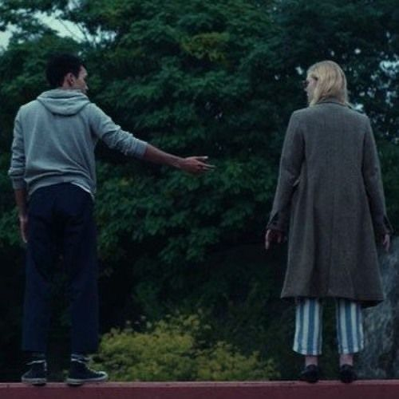
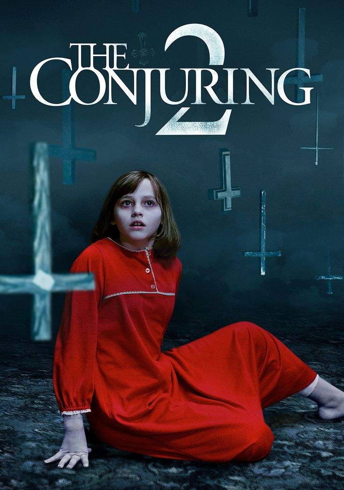
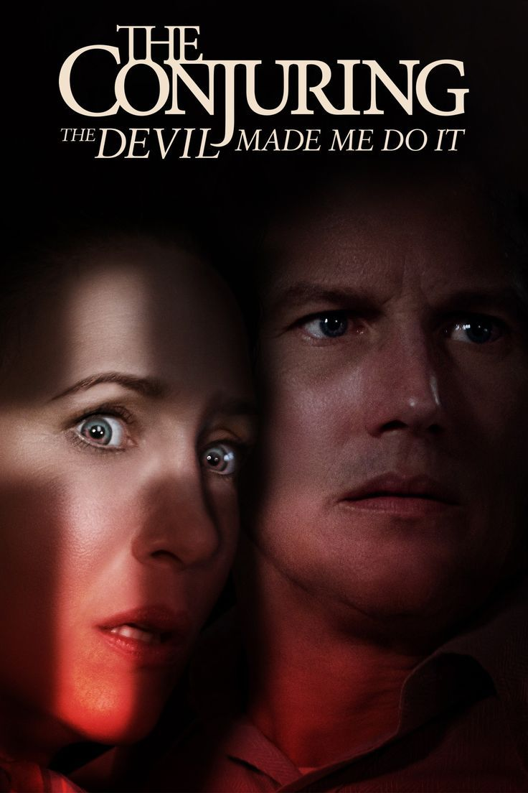
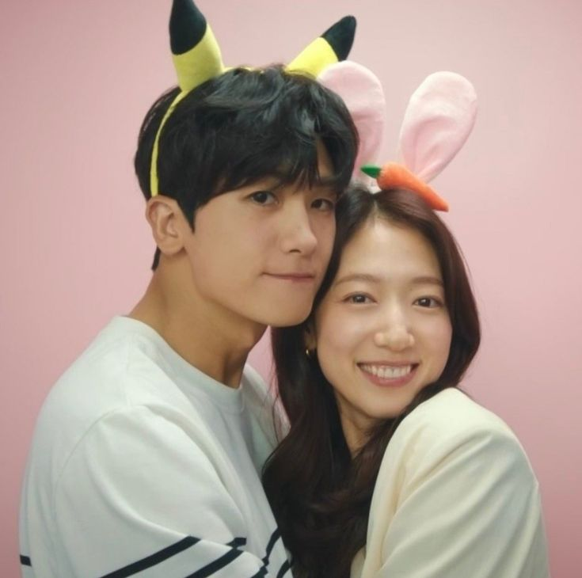

Para todos os garotos que já amei
Baseado no romance de Jenny Han, Para Todos os Garotos que Já Amei segue as aventuras amorosas de Lara Jean (Lana Condor). No ensino médio, Lara tem um hábito de escrever cartas para todos os garotos que já gostou de alguma forma, de modo que ela possa liberar o amor não correspondido ou que nunca foi falado para a pessoa. Todas as cartas que já escreveu são guardadas em uma caixa. Um dia sua irmã mais nova acha as cartas e decide mandar para todos os destinatários, afim de ajudar a irmã a ser correspondida por um deles ou apenas receber uma mensagem.
08/04/2020
Simplesmente acontece
Os jovens britânicos Rosie (Lily Collins) e Alex (Sam Claflin) são amigos inseparáveis desde a infância, experimentando juntos as dificuldades amorosas, familiares e escolares. Embora exista uma atração entre eles, os dois mantêm a amizade acima de tudo. Um dia, Alex decide aceitar um convite para estudar medicina em Harvard, nos Estados Unidos. A distância entre eles faz com que nasçam os primeiros segredos, enquanto cada um encontra outros namorados e namoradas. Mas o destino continua atraindo Rosie e Alex um ao outro.
05/03/2015
Por lugares incríveis
O enredo de Por Lugares Incríveis acompanha Violet Markey (Elle Fanning) e Theodore Finch (Justice Smith), que têm suas vidas transformadas para sempre quando se conhecem. Juntos, eles se apoiam para curar os estigmas emocionais e físicos que adquiriram no passado.
08/04/2020
Ele não está tão afim de você
Gigi (Ginnifer Goodwin) é uma romântica incurável, que um dia resolve sair com Conor (Kevin Connolly). Ela espera que ele ligue no dia seguinte, o que não acontece. Gigi resolve ir até o bar onde se conheceram, na esperança de reencontrá-lo. Lá ela conhece Alex (Justin Long), amigo de Conor. Ele tem uma visão bastante realista sobre os relacionamentos amorosos e tenta apresentá-la a Gigi, através de seu ponto de vista masculino. Por sua vez Conor é apaixonado por Anna (Scalett Johansson), uma cantora que o trata apenas como amigo e que se interessa por Ben (Bradley Cooper), casado com Janine (Jennifer Connelly). O casamento deles está em crise, o que não impede que Janine dê conselhos amorosos a Gigi, com quem trabalha. Outra colega de serviço é Beth (Jennifer Aniston), que namora Neil (Ben Affleck) há 7 anos e sonha em um dia se casar, apesar dele ser contrário à idéia
27/03/2009
Invocação do mal

Harrisville, Estados Unidos. Um casal (Ron Livinston e Lili Taylor) muda para uma casa nova ao lado de suas cinco filhas. Inexplicavelmente, estranhos acontecimentos começam a assustar as crianças, o pai e, principalmente, a mãe. Preocupada com algumas manchas que aparecem em seu corpo e com uma sequência de sustos que levou, ela decide procurar um famoso casal de investigadores paranormais (Patrick Wilson e Vera Farmiga), mas eles não aceitam o convite, acreditando ser somente mais um engano de pessoas apavoradas com canos que fazem barulhos durante a noite ou coisas do gênero. Porém, quando eles aceitam fazer uma visita ao local, descobrem que algo muito poderoso e do mal reside ali. Agora, eles precisam descobrir o que é e o porquê daquilo tudo acontecendo com os membros daquela família. É quando o passado começa a revelar uma entidade demoníaca querendo continuar sua trajetória de maldades.
13/09/2013
Invocação do mal 2
Em Invocação do Mal 2, os investigadores paranormais Ed (Patrick Wilson) e Lorraine (Vera Farmiga) desembarcam em Londres, Inglaterra, para ajudar uma família atormentada. Peggy (Frances O'Connor), uma mãe solteira, acredita que tenha algo maligno em sua casa
09/07/2015
Invocação do mal 3
Invocação do Mal 3: A Ordem do Demônio revela uma história assustadora de terror, assassinato e um desconhecido mal que chocou até os experientes investigadores de atividades paranormais Ed (Patrick Wilson) e Lorraine Warren (Vera Farmiga). Um dos casos mais sensacionais de seus arquivos, começa com uma luta pela alma de um garoto, depois os leva para além de tudo o que já haviam visto antes, para marcar a primeira vez na história dos Estados Unidos que um suspeito de assassinato alega ter tido uma possessão demoníaca como defesa.
03/06/2021
A primeira Profecia
A Primeira Profecia marca o prelúdio do clássico filme de terror A Profecia (1976). A nova trama acompanha a jovem americana Margaret (Nell Tiger Free), que é enviada a Roma para viver a serviço da igreja. No local, ela se afeiçoa por Carlita, uma jovem quieta e sozinha, que também mora no convento. Ao questionar o passado e a situação da garota para as outras irmãs da igreja, ela é alertada para se manter afastada. No entanto, antes de seguir o conselho, ela se depara com uma escuridão que a faz questionar sua fé.
04/04/2024
Pousando no amor
Em Pousando no Amor, uma jovem herdeira sul-coreana decide fazer um passeio de parapente para testar os novos produtos esportivos da empresa de sua família. Mas durante o percurso, ela acaba presa em um tornado e é jogada para fora da fronteira da Coréia do Sul, caindo em solo norte-coreano. Já no chão, ela acaba conhecendo um jovem general do exército que decide ajudá-la a se esconder. Durante esse período juntos, oss dois acabam criando uma forte conexão.
2019/2020
Primeira vez amor
Problemas pessoais fazem com que os melhores amigos da faculdade de Yun Tae-o (Ji Soo) se mudem para a casa dele. No novo lar, eles descobrem sentimentos até então inexplorados, como o primeiro amor e a amizade.
2019
Médicos em colapso
Em Médicos em Colapso, um famoso cirurgião plástico e uma anestesista dedicada eram rivais quando estudavam juntos. Anos depois, sofrem com o colapso de suas vidas e acabam se reencontrando. No drama coreano, Jung-woo (Park Hyung-sik) é um aclamado cirurgião plástico, mas um misterioso erro médico faz com que ele seja penalizado, provocando uma crise em sua vida toda. Ao se mudar para um novo apartamento, ele reencontra Ha-neul (Park Shin-hye), sua antiga colega de classe e rival nos estudos, que está em sua próprio fundo do poço. Agora, os dois médicos irão se ajudar a achar um novo caminho, até que o amor floresce.
2024
Nosso eterno verão
Disponível na Netflix, Nosso Eterno Verão é uma comédia romântica que narra a história de Choi Woong (Choi Woo-shik) and Kook Yeon-soo (Kim Da-mi), dois ex-namorados que encerram o relacionamento com a promessa de nunca mais se encontrar. Mas para o azar dos dois, o documentário que eles gravaram na época de escola uma década antes acaba viralizando e eles são forçados a trabalhar juntos novamente. Ao decorrer dos episódios, o público é apresentando ao complexo e turbulento relacionamento de Choi e Yeon-soo e suas diferentes personalidades.
2021